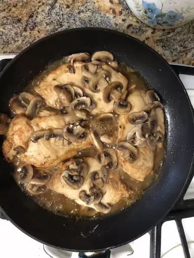

Chicken Marsala

Ingredients
- 1/4 C. Flour
- 1/2 t. Salt
- 1/4 t. Black Pepper
- 1/2 t. Oregano
- 4 Chicken Breasts, pounded 1/4"
- 4 T. Butter
- 4 T. Olive Oil
- 1 C. Sliced Mushrooms
- 1/2 C. Marsala Wine
- 1/4 C. Sherry
Directions
- In a shallow dish or bowl, mix together the flour, salt, pepper and oregano. Coat chicken pieces in flour mixture.
- In a large skillet, melt butter in oil over medium heat. Place chicken in the pan, and lightly brown. Turn over chicken pieces, and add mushrooms. Pour in wine and sherry. Cover skillet; simmer chicken 10 minutes, turning once, until no longer pink and juices run clear.